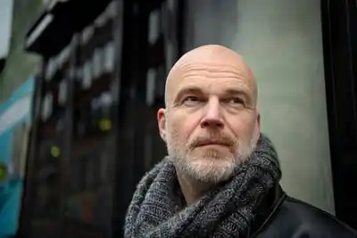

Арне Свінген народився 10 липня 1967 року в Осло.
Був журналістом у Nye Takter та Arbeiderbladet, працював у НТВ і був редактором музичного журналу BEAT. Пише книги у різних жанрах, але найкраще відомий своїми книгами для дітей та молоді.
Письменник Арне Свінген подвійно дебютував у 1999 році романом "Людина дії" для дорослих читачів і дитячою книжкою "Флеккен". Він написав найбільше дитячих книжок, таких як дев'ять книжок із серії про антигероя Губерта, серіал жахів "Темний світ Свінга", гумористичний серіал "Божевільний світ Свінга", серіал про напруженість "Агент Елвін Гріфф" і фантастичний серіал "Бендік і монстр". Серед його найвідоміших дитячих романів — "Снитч", "Усі мої друзі — вампіри", "Тихий крик", "Балада про зламаний ніс" і дві книги про Revolvergutten. Разом з авторами Йоном Ево, Інгунном Аамодтом і Томом Егеландом він написав серію жахів Marg & Bein. Він написав низку молодіжних книжок, у тому числі "Midt i svevet", "Primitive Marsupial", "All I owe you to a beating" і "Man dier litt er durg", а також написав два молодіжні романи разом з Хелен Урі. Він також написав кілька романів для дорослих, наприклад "Pøbelkomiteen" про дорослішання в Гроруді та рок-роман "Людина, яка пройшла крізь звуковий бар'єр". Влітку 2016 року "Балада про зламаний ніс" вийшла в американському видавництві Simon & Schuster і отримала премію Bachelder Honor Book Award. За кількома його книгами знято фільми. "Найкрутіші хлопці" були перетворені в повнометражний фільм, книги про Губерта були перетворені в 26 мультфільмів, а "Бендік і чудовисько" перетворені в анімаційний короткометражний фільм, який отримав низку міжнародних нагород. Свінген є автором подкасту "Світ дитячої книги Свінгена", де він взяв інтерв'ю у понад 100 інших норвезьких авторів та ілюстраторів дитячих і юнацьких книг. У 2019 році він організував літературний фестиваль Gutta.